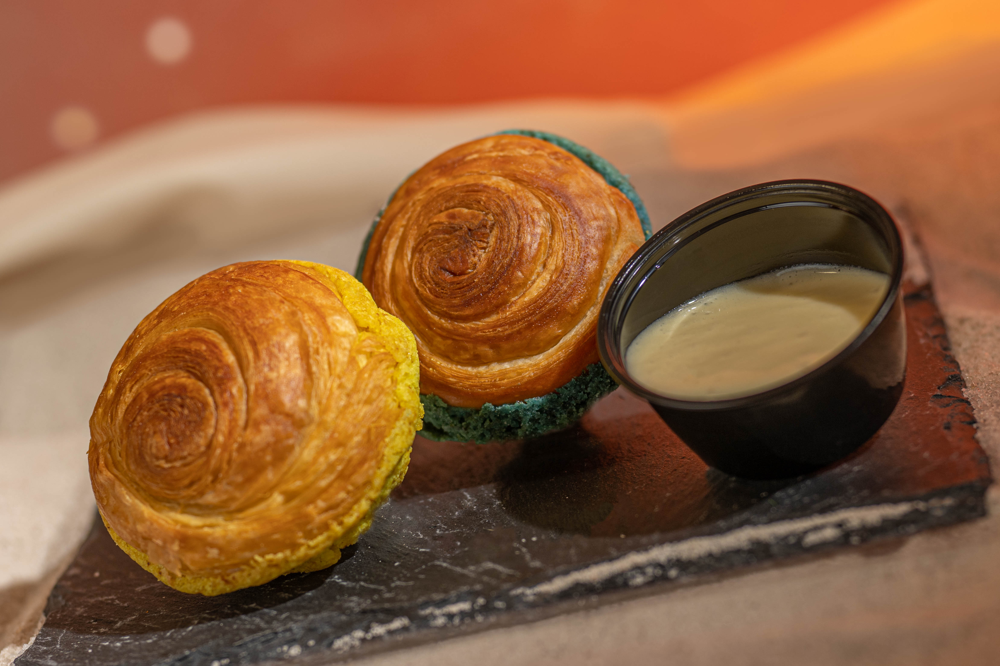

Top
May the Fourth
May the Fourth is celebrated all over Disney's Hollywood Studios, and I got to be the lucky one to art direct and execute the campaign. To view the full mood board and concept deck, click
here!
